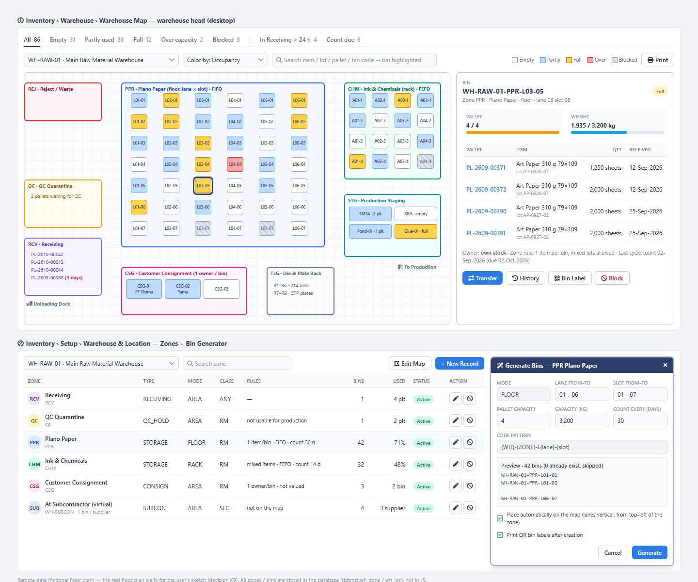
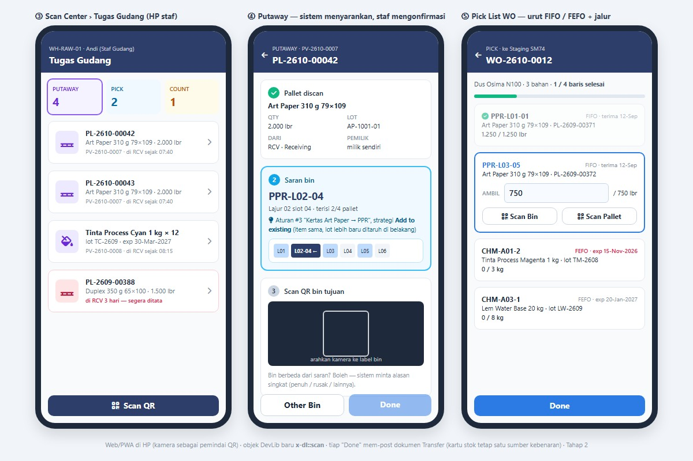

prod_part_material) hanya berisi spesifikasi (gramatur + ukuran), material_id kosong, jadi booking harus bisa menangani baris "spec saja".
(2) mat_raw.lead_time_days kosong di semua item, padahal tanggal pesan PR dihitung dari sini.
(3) Tabel rm_booking/rm_booking_d sudah ada tapi kosong dan belum dipakai kode. Desain memakainya ulang.
(4) Saldo berjalan rm_stockcard.qty_eb untuk ANIMAL GLUE tidak konsisten (mis. IN 1.000 lalu ADJ +100 tercatat saldo 100) dan ada saldo negatif di lokasi UNKNOWN-LEGACY. Karena itu angka di preview dibuat bersih sebagai contoh.
Rekomendasi saya ada di kolom kanan. Balas cukup dengan nomor, mis. "M1 ya, A1 batas 2 juta, B3 setuju".
| # | Topik | Pilihan | Rekomendasi |
|---|---|---|---|
| Tata letak (dari review sebelumnya) | |||
| K1–K11 | Struktur zona-bin, pallet, titipan, subkon, jurnal transfer, cycle count, tooling, denah, FEFO, scanner | Lihat tab Tata Letak | Sesuai rekomendasi di tab Tata Letak |
| Multi lokasi | |||
| M1 | Lapis Site | Tambah wh_site / cukup gudang | Tambah bila ada ≥2 alamat fisik. Mohon info: ada berapa lokasi fisik? |
| M2 | Transfer antar site | 1 langkah / 2 langkah (kirim → terima) | 2 langkah dengan In Transit; antar bin & antar gudang satu site cukup 1 langkah |
| M3 | Selisih saat terima transfer | Boleh edit qty / buat adjustment | Qty terima dicatat apa adanya, selisih otomatis jadi Adjustment Draft yang wajib approval |
| Stok & laporan | |||
| A1 | Jenjang approval adjustment | Level per nilai rupiah | L1 Kepala Gudang selalu; L2 Ops Manager bila |nilai| ≥ Rp 1 jt; L3 Dir F&A bila ≥ Rp 10 jt (angka mohon ditetapkan) |
| A2 | Kapan adjustment memengaruhi stok | Saat Confirm / saat approval terakhir | Setelah approval terakhir; selama menunggu, qty tampil "pending" di On Hand |
| S1 | Kolom nilai (Rp) di Stock Card Extended & Master Stock | Semua / terbatas | Hanya Finance, Costing, Ops Manager ke atas (disaring di server, seperti aturan harga jual) |
| Material Booking | |||
| B1 | Pemicu | Otomatis saat CO Confirmed / manual | Otomatis dihitung saat CO Confirmed + ulang tiap malam & saat ada kejadian (PV, adjustment, CO berubah) |
| B2 | Soft vs hard booking | Langsung kunci stok / usulan dulu | Engine membuat usulan (soft); stok baru terkunci (hard) setelah PPIC Confirm |
| B3 | Bahan yang dihitung | Kertas saja / + tinta, varnish, lem | Tahap 1 kertas/board dari layout ProDev; Tahap 2 tinta/varnish/lem setelah standar pemakaian bisa diinput |
| B4 | Tanggal butuh bahan | Tetap / per produk | Tgl kirim CPDEL − lead produksi (default 7 hari kerja di Constants, bisa diubah per produk) |
| B5 | Rebutan stok antar CO | Siapa duluan | Tgl butuh paling awal menang; hot job boleh ambil alih dengan persetujuan Ops Manager (tercatat) |
| B6 | BOM spec saja (material kosong) | Wajib diisi dulu / pilih saat booking | PPIC memilih item dari daftar yang cocok (gramatur, ukuran, kategori); pilihan disimpan jadi default di Master Product setelah dikonfirmasi |
| B7 | Stok FG untuk repeat order | Abaikan / cek dulu | Cek FG dulu dan tampilkan; booking FG di Tahap 2 |
| B8 | Pembuatan PR | Per baris / dikelompokkan | Satu PR per supplier usulan; qty dibulatkan ke kemasan beli (rim/roll); i_co_line_id & tanggal butuh terisi. Lead time per kategori wajib diinput dulu |
| B9 | Hubungan dengan MRP lama | — | Booking ini khusus berbasis CO (tanpa forecast), bukan menghidupkan MRP/MPS yang diarsipkan |
wh_loc sudah berbentuk bin dan stok sudah tercatat per lokasi + lot, jadi strukturnya Gudang → Zona (baru) → Bin. Detail lengkap di docs/warehouselayout_tier1.md.
wh_site S1 Pabrik (contoh) ← baru bila M1 disetujui
└─ wh_warehouse WH-RAW-01 Gudang Utama Bahan Baku
├─ wh_zone RCV Receiving · QC Karantina · PPR Kertas Plano (lantai) · CHM Tinta & Kimia (rak) · STG Staging
│ └─ wh_loc WH-RAW-01-PPR-L03-05 (bin = tempat stok menempel)
└─ ...


| # | Keputusan | Rekomendasi |
|---|---|---|
| K1 | Lapis struktur | Gudang → Zona → Bin (wh_loc tetap = bin) |
| K2 | Catat posisi / diarahkan | Tahap 1 catat, Tahap 2 terarah |
| K3 | Pallet ber-QR | Ya, Tahap 2 |
| K4 | Titipan customer | Pemilik di baris stok + zona khusus, tidak dinilai |
| K5 | Barang di subkon | Bin virtual per supplier |
| K6 | Transfer berjurnal | Tidak |
| K7 | Kunci bin saat cycle count | Tidak |
| K8 | Rak pisau/plat | Ya, zona TOOLING |
| K9 | Denah asli | Mohon sketsa/foto + daftar rak sebelum ke tm2 |
| K10 | Umur simpan | Per kategori, override per item |
| K11 | Alat scan | Kamera HP lewat web dulu |
wh_site (id_site, site_code, site_name, address, geo_id, activate) dan kolom wh_warehouse.site_id. Tiap site punya 1 gudang virtual IN-TRANSIT untuk barang dalam perjalanan ke site itu.Setup › Warehouse & Location › tingkat Site (contoh)
| Site | Gudang | Tipe | Zona | Bin | Item berstok | Bin terpakai |
|---|---|---|---|---|---|---|
| S1 · Pabrik (contoh) | ||||||
| WH-RAW-01 Gudang Utama Bahan Baku | RM | 7 | 86 | 412 | 64% | |
| WH-FG-01 Gudang Utama Barang Jadi | FG | 4 | 40 | 96 | 55% | |
| WH-MIX-01 Gudang Transit & Buffer | MIX | 2 | 12 | 18 | 40% | |
| WH-SCP-01 Area Penampungan Afval | WASTE | 1 | 1 | 6 | — | |
| IT-S1 In Transit ke S1 | VIRTUAL | 1 | 1 | 1 | — | |
| S2 · Gudang Luar (contoh) | ||||||
| WH-RAW-02 Gudang Kertas Luar | RM | 2 | 24 | 37 | 71% | |
| IT-S2 In Transit ke S2 | VIRTUAL | 1 | 1 | 0 | — | |
| Virtual (tanpa site) | ||||||
| WH-SUBCON Barang di Subkon | VIRTUAL | 1 | 4 | 5 | — | |
Available = On Hand di zona STORAGE/STAGING (pemilik kosong atau customer order yang sama) − Booked. Zona RECEIVING, QC, REJECT, SUBCON, CONSIGN pihak lain, dan In Transit tidak ikut.
Stock In/Out/Return tetap per gudang + bin. Layar hanya menambah pilihan Site sebagai filter awal. Tidak ada perubahan kolom di dokumen lama selain yang sudah disebut di tab Tata Letak.
Inventory › Cari Barang (preview interaktif: ketik "glue", "duplex", "310", atau klik baris)
| Item | Satuan | S1 Pabrik | S2 Gudang Luar | In Transit | On Hand | Booked | Available | Bin |
|---|
26TF00005, doc_cat TF) untuk tiga jenis: Antar Bin, Antar Gudang (satu site), Antar Site.Inventory › Transfer › 26TF00005 (preview: pilih jenis transfer untuk melihat bedanya)
| # | Item | Dari bin | Lot / Pallet | Available | Qty kirim | Ke bin (saran) | Qty terima |
|---|---|---|---|---|---|---|---|
| 1 | AC 310 GR GOLDEN COIN 79 X 109 CM PCF08008 · LBR | WH-RAW-02-PPR-L01-03 | AC-0920 · PL-2609-00402 | 680 | 680 | WH-RAW-01-PPR-L03-02 saran | — |
| 2 | DUPLEX 350 GR 72,5 X 108 PZ03572 · LBR | WH-RAW-02-PPR-L01-01 | DP-0915-02 · PL-2609-00355 | 300 | 300 | WH-RAW-01-PPR-L02-05 saran | — |
inv_period; baris terakhir = total + saldo akhir, sama dengan Master Stock.Inventory › Raw Material › Report › Stock Card
| Tanggal | Dokumen | Keterangan | Masuk | Keluar | Saldo (KG) |
|---|---|---|---|---|---|
| 01-Sep-2026 | Saldo awal | 960 | |||
| 03-Sep-2026 | 26OU00015 | Stock Out · WO2600241 (Lem) | 20 | 940 | |
| 10-Sep-2026 | 26IN00003 | Terima PO2600004 · PV | 100 | 1.040 | |
| 18-Sep-2026 | 26OU00018 | Stock Out · WO2600252 | 20 | 1.020 | |
| 25-Sep-2026 | 26AD00015 | Adjustment · selisih cycle count CHM | 10 | 1.010 | |
| 30-Sep-2026 | Total & saldo akhir | 100 | 50 | 1.010 |
Adjustment minus ditampilkan di kolom Keluar (plus di Masuk) agar simple; versi extended memisahkan kolom Adj.
Inventory › Raw Material › Report › Stock Card Extended
| Tanggal | Dokumen | Tipe | Bin | Lot | Pemilik | Referensi | Masuk | Keluar | Adj | Saldo | Harga rata² | Nilai mutasi | Saldo nilai | User |
|---|---|---|---|---|---|---|---|---|---|---|---|---|---|---|
| 01-Sep | BB | — | Saldo awal | 960 | 12.500,00 | 12.000.000 | ||||||||
| 03-Sep | 26OU00015 | OUT | CHM-A02-1 | AG-0826 | sendiri | WO2600241 | 20 | 940 | 12.500,00 | −250.000 | 11.750.000 | andi | ||
| 10-Sep | 26IN00003 | IN | CHM-A02-2 | AG-0921 | sendiri | PO2600004 | 100 | 1.040 | 12.509,62 | +1.260.000 | 13.010.000 | rina | ||
| 12-Sep | 26TF00002 | TF out | CHM-A02-1 | AG-0826 | sendiri | → STG-LEM01 | 40 | 1.040 | 12.509,62 | 0 | 13.010.000 | andi | ||
| 12-Sep | 26TF00002 | TF in | STG-LEM01 | AG-0826 | sendiri | ← CHM-A02-1 | 40 | 1.040 | 12.509,62 | 0 | 13.010.000 | andi | ||
| 18-Sep | 26OU00018 | OUT | STG-LEM01 | AG-0826 | sendiri | WO2600252 | 20 | 1.020 | 12.509,62 | −250.192 | 12.759.808 | andi | ||
| 25-Sep | 26AD00015 | ADJ | CHM-A02-2 | AG-0921 | sendiri | Cycle count CHM · 2/2 approved | −10 | 1.010 | 12.509,62 | −125.096 | 12.634.712 | kepala.gudang | ||
| 30-Sep | Total | 100 | 40 | −10 | 1.010 | 12.509,62 | 12.634.712 |
Total masuk/keluar di atas tidak menghitung baris TF (netral di tingkat gudang). Saldo akhir per bin: CHM-A02-1 540 · CHM-A02-2 450 · STG-LEM01 20.
Inventory › Report › Item per Location (preview: klik chip filter riwayat)
| Site | Gudang | Zona | Bin | Lot / Pallet | Terima | Umur | Qty (LBR) | Booked | Untuk |
|---|---|---|---|---|---|---|---|---|---|
| S1 | WH-RAW-01 | PPR | PPR-L02-04 | DP-0926-03 · PL-2609-00380 | 26-Sep-2026 | 5 hr | 876 | 876 | CO2600004 |
| S1 | WH-RAW-01 | PPR | PPR-L02-05 | DP-0929-01 · PL-2609-00396 | 29-Sep-2026 | 2 hr | 574 | 0 | |
| S2 | WH-RAW-02 | PPR | L01-01 | DP-0915-02 · PL-2609-00355 | 15-Sep-2026 | 16 hr | 300 | 0 | akan ditransfer 26TF00005 |
| Total | 1.750 | 876 | Available 874 | ||||||
| Tanggal | Dokumen | Tipe | Bin | Lot | Qty | Referensi | User |
|---|
① Pembuat · Inventory › Raw Material › Stock Adjustment
| Item | Bin / Lot | Sistem | Fisik | Selisih | Nilai |
|---|---|---|---|---|---|
| ANIMAL GLUE KG | CHM-A02-2 AG-0921 | 450 | 440 | −10 | −125.096 |
| UV VARNISH KG | CHM-A03-1 UV-0909 | 26 | 24 | −2 | −170.000 |
| SURPRIZE TK CYAN KG | CHM-A01-2 TC-2609 | 9 | 10 | +1 | +310.000 |
| Total nilai (|mutlak| 605.096 → jenjang 1 level + 1 level karena ada minus) | +14.904 | ||||
② Approver · Approval Center › Stock Adjustment (preview: klik tombol)
Aturan jenjang contoh: L1 Kepala Gudang selalu; L2 Ops Manager bila ada baris minus atau |nilai| ≥ Rp 1 jt; L3 Dir F&A bila ≥ Rp 10 jt. Angka final mengikuti keputusan A1.
inv_period.i_status = CLOSED) membaca snapshot; periode berjalan dihitung dari kartu stok.Inventory › Raw Material › Report › Stock Balance (Master Stock)
| Kode | Item | Satuan | Saldo awal | Masuk | Keluar | Adjustment | Saldo akhir |
|---|
Inventory › Stock On Hand (preview: klik kotak statistik)
| Item | Satuan | On Hand | Booked | Available | Incoming | Pending adj | Min | Status |
|---|
prod_part_material; bila material kosong → baris Need Item, engine mengusulkan item yang cocok (kategori + gramatur + ukuran ≥ plano).qty_issued; sisa dilepas saat WO selesai. CO Cancel → booking dilepas otomatis.rm_booking (ada): 1 header per CO — tambah co_id, run_at, doc_status. Nomor BK2600001.rm_booking_d (ada: qty_need, qty_book, qty_purchase, qty_replacement, qty_issued, material_replace_id, replace_ratio, pr_detail_id…) — tambah co_delivery_id, part_id, need_date, line_status (BOOKED / PEGGED_PO / LATE_PO / PEGGED_PR / SHORT / NEED_ITEM / ISSUED / RELEASED), source (LAYOUT / BOM / MANUAL), calc_up, calc_waste_pct, spesifikasi (spec_category_id, spec_gram, spec_w_mm, spec_h_mm), priority.rm_booking_alloc baru: satu kebutuhan bisa ditutup beberapa sumber — booking_detail_id, source_type (STOCK / PO / PR), source_id (layer / po line / pr line), location_id, lot_no, pallet_id, qty, is_hard.pr_line.i_co_line_id, i_need_date.Production Planning › Material Booking (preview: klik kotak = filter, klik baris = buka CO)
| CO | Customer | Produk | Qty | Kirim | Butuh bahan | Coverage | Status | Aksi |
|---|
Beberapa CO di atas masih DRAFT di ddtsdi; di preview diperlakukan seolah Confirmed. Tanggal kirim contoh.
Material Booking › BK2600003 · CO2600004
| Item CO / Part | Bahan | Perhitungan | Butuh | Ditutup oleh | Short | Status | Aksi |
|---|---|---|---|---|---|---|---|
| 1 · Folding Box Duplex 350gr Kosmetik (FB-DUPLEX-001) · 5.000 PCS | |||||||
| Body layout LG-0012 CONFIRMED | DUPLEX 350 GR 72,5 X 108 PZ03572 · LBR | ⌈5.000 ÷ 6 UP⌉ × 1,05 | 876 | Stok PPR-L02-04 · DP-0926-03 · 876 | 0 | Booked | |
| Body · cetak | SURPRIZE TK CYAN XZ05857 · KG | 876 lbr × 1,4 kg/1000 | 1,2 | Stok CHM-A01-2 · TC-2609 · 1,2 | 0 | Booked | |
| Body · cetak | SURPRIZE TK MAGENTA XZ05858 · KG | 876 lbr × 1,4 kg/1000 | 1,2 | Stok CHM-A01-3 · TM-2608 · 1,2 | 0 | Booked | |
| Body · coating | UV VARNISH XZ01268 · KG | 0,79 m² × 876 × 6,3 g | 4,4 | Stok CHM-A03-1 · 2,0 PO2600007 · tiba 06-Oct · 2,4 | 0 | Stok + PO | |
| Body · lem | ANIMAL GLUE GZ00726 · KG | 5.000 × 0,6 g | 3,0 | Stok STG-LEM01 · AG-0826 · 3,0 | 0 | Booked | |
| 2 · Sticker Label Bulat 5cm Vinyl (LBL-STK-003) · 10.000 ROLL | |||||||
| Label BOM: spec saja | Vinyl sticker · 70 × 100 cm material belum dipilih | ⌈10.000 ÷ 24 UP⌉ × 1,05 | 438 | — | 438 | Need Item | |
| Label · cetak | SURPRIZE TK BLACK XZ05856 · KG | 438 lbr × 1,4 kg/1000 | 0,6 | Stok CHM-A01-1 · 0,6 | 0 | Booked | |
Usulan engine: kategori sama, ukuran ≥ plano. Pilihan akan disimpan sebagai default di Master Product setelah Anda konfirmasi (B6).
| Item | Ukuran | Available | Hasil potong | Catatan | |
|---|---|---|---|---|---|
| STIKER VINYL CHROMO 70 X 100 CM (contoh) | 70 × 100 | 520 | 1 : 1 | cukup | |
| STIKER KS CC CAMEL 108 X 70 CM | 108 × 70 | 1 | 1 : 1 | stok kurang |
Angka pemakaian tinta/varnish/lem di baris ini contoh; di Tahap 1 hanya kertas/board yang dihitung (B3).
Purchasing › Shortage Planner (preview: centang lalu Create PR)
| Bahan | Dipakai oleh | Butuh | Available | Incoming | Kurang | Butuh pertama | Pesan paling lambat | Usulan PR | Status | |
|---|---|---|---|---|---|---|---|---|---|---|
| AC 310 GR GOLDEN COIN 79 X 109 CM PCF08008 · LBR · lead time belum diisi → default 5 hari | CO2600007 · CO2600014 | 5.138 | 1.680 | 2.000 PO2600007 14-Oct | 2.258 | 12-Oct-2026 | 07-Oct-2026 | 2.500 5 rim × 500 | Short | |
| IVORY 310 GR SP 79 X 109 CM PZ00661 · LBR | CO2600017 | 5.600 | 1.700 | 3.900 PO2600005 22-Oct | 0 | 19-Oct-2026 | — | — | Late PO · 3 hari Expedite atau kirim sebagian | |
| AC/IVORY 310 g · 100 × 70 cm (spec) material belum dipilih | CO2600013 | 2.625 | — | — | — | 17-Oct-2026 | — | — | Need Item Pick Item di Booking CO | |
| Vinyl sticker · 70 × 100 cm (spec) | CO2600004 | 438 | — | — | — | 08-Oct-2026 | — | — | Need Item |
PR yang dibuat: satu per supplier usulan, baris berisi CO asal + tanggal butuh, status Draft untuk dicek Purchasing.
Material Timeline · proyeksi saldo per tanggal (preview: nyalakan/matikan usulan PR)
| Tanggal | Kejadian | Dokumen | Qty | Proyeksi saldo |
|---|
Saldo negatif = tanggal bahan akan habis. Stok di S2 (680) ikut dihitung karena satu perusahaan; perlu Transfer antar site sebelum dipakai (tab Transfer).
Dokumen di repo: docs/warehouselayout_tier1.md, docs/materialbooking_tier1.md, backlog docs/backlog05_inventory_warehouse.md.